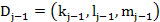
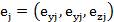
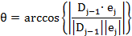

Calculation of Incidence Angle
Incidence angles corresponding to local angle between the incident ray and the normal vector of the surface at the intersection point can be computed as follows:
Direction cosines of the incident ray at the surface j 
Local unit normal vector at the surface j 
The incident angle is

Since the coordinates are rotational symmetrical, the angle is always positive.
Created with the Personal Edition of HelpNDoc: Free Kindle producer